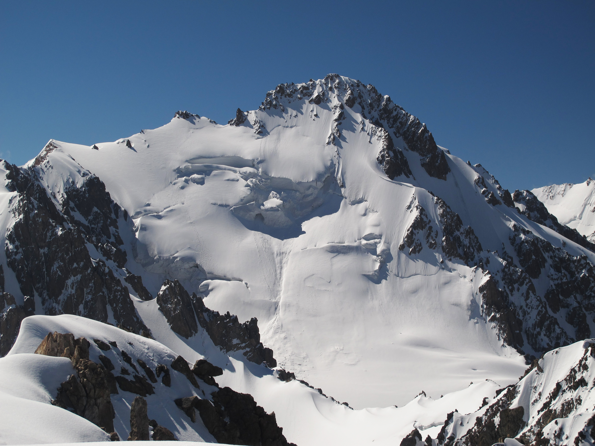

Le Pic Semenov-Tian Shansky
Le pic Semenov-Tian-Shansky, situé dans le parc national d’Ala-Archa, au Kirghizistan, est une montagne culminant à 4 895 mètres. Ce sommet tire son nom de l’explorateur et géographe russe Pyotr Semenov-Tian-Shansky, qui a grandement contribué à la cartographie et à la connaissance de la chaîne de montagnes du Tian Shan au XIXᵉ siècle. Voici un aperçu détaillé de ce sommet remarquable.
Localisation et contexte géographique
Le pic Semenov-Tian-Shansky se trouve dans la chaîne de montagnes Kyrgyz Ala-Too, une sous-chaîne du Tian Shan. Situé dans le parc national d’Ala-Archa, il domine une région connue pour ses paysages époustouflants mêlant glaciers, vallées alpines et forêts. La montagne est entourée par deux rivières, l’Ala-Archa à l’ouest et l’Alamedin à l’est. Grâce à sa proximité avec la capitale Bichkek, ce sommet est un lieu prisé des randonneurs et alpinistes, offrant des défis variés selon les itinéraires choisis.
Histoire et exploration
La montagne est nommée en l’honneur de Pyotr Semenov-Tian-Shansky, qui a exploré la région au XIXᵉ siècle sous la commande de la Société géographique russe. Il fut l’un des premiers Européens à décrire en détail la biodiversité, la géologie et la topographie du Tian Shan, contribuant ainsi à sa renommée scientifique. Ses explorations ont permis de lever le voile sur cette région isolée, alors peu documentée par les naturalistes.
Biodiversité et environnement naturel
Le pic se situe dans le parc national d’Ala-Archa, qui abrite une riche biodiversité. On y trouve des espèces rares comme le léopard des neiges, des bouquetins, des marmottes et une variété d’oiseaux. Les versants de la montagne sont également couverts de forêts de conifères et d’une flore alpine, contribuant à son attrait pour les amoureux de la nature.
Activités et attraits touristiques
La montagne est une destination populaire pour les alpinistes et les randonneurs. Les itinéraires vers le sommet partent généralement du glacier Ak-Sai, situé dans la vallée centrale du parc. La région propose des défis adaptés aux amateurs de trek comme aux grimpeurs expérimentés, grâce à ses parois rocheuses abruptes et ses pentes glacées.Le parc national d’Ala-Archa, où se trouve le pic, est aussi célèbre pour ses festivals d’alpinisme, notamment l’événement annuel Alpinada. De plus, l’infrastructure touristique autour de la montagne (comme les refuges de montagne et les sentiers balisés) facilite l’accès à ce paysage spectaculaire.
Importance culturelle et scientifique
Le pic Semenov-Tian-Shansky n’est pas seulement un site naturel impressionnant : il symbolise également l’héritage des explorations russes en Asie centrale. En tant que point culminant de la chaîne Kyrgyz Ala-Too, il attire aussi les scientifiques et les écologistes intéressés par les changements environnementaux dans cette région montagneuse sensible.